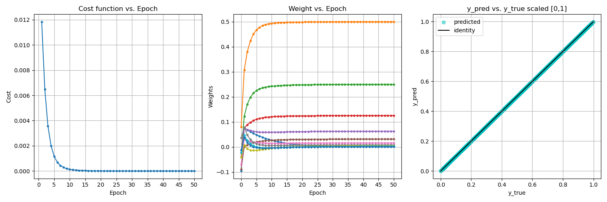

Perceptron From Scratch
Power of a neuron

Neural Networks are very fascinating, but they are very complicated to understand. To simplify our understanding, we start with the simplest unit of the neural network – the perceptron. We want to understand what role the perceptron plays and its functioning as a simple logical unit. This should hopefully improve our understanding of a neural network.
What is a perceptron?
A perceptron is an artificial neuron that takes in several inputs, processes them and produces an output. There are three components constituting the input side of a perceptron:
- the inputs themselves
- a weight associated with each input
- a bias
The perceptron computes its output as follows: $$ f(x) = w_0+w_1x_1+w_2x_2+w_3x_3+…w_nx_n \tag{1} $$
In other words, the output of a perceptron is the weighted sum of its inputs, optionally conditioned by an activation function. We will not be considering an activation function in this exploration.
In the expression above, the \(w_0\) is the bias and each \(w_ix_i\) is an input multiplied by its corresponding weight.
The perceptron is quite similar to the biological neuron as it has inputs, processing and output just as that of the biological neuron. Many perceptrons combine to form a neural network containing many layers capable of performing complex learning tasks.
How does a perceptron learn?
Perceptrons learn in the same way as the human brain does. The biological neuron has structures like the nucleus, dendrites and axon. The dendrites collect information from other neurons, the neuron processes and sends it out through the axon(the long tail below the neuron). The perceptron is a derivative of the neuron and has a similar structure but in a more simplified form.
What does it mean for a perceptron to learn? Perceptrons learn through supervised methods. A perceptron learns by adjusting its weights(see equation above) so as to learn the best approximation of the correct function \(f(x)\) that gives the expected set of outputs for the corresponding set of inputs of the form \(x_1…x_n\). This is done by training the perceptron repeatedly on a training set containing a lot many training samples. Each such repetition is called an epoch.
Each epoch takes the perceptron closer and closer to the expected function \(f(x)\) by the process of adjusting its weights and bias. This is also called fitting the model to the training data.
The cost function
We are always interested in knowing how far we have come in training our perceptron. This is achieved by calculating a so-called cost function. Although there are many kinds of cost functions, we will stick to a quadratic cost function which is defined as follows:
$$ E(\vec{w}) = 0.5\sum\limits_{d \in D} (t_d - o_d)^2 \tag{2} $$
where, \(E, \vec{w}, d \in D, t_d, o_d\) are respectively the error(cost), the weight vector, the particular training instance as a subset of the training set, the target output for the training instance and the actual output for the training instance. The total error is a summation of the errors across all the training instances.
This function gives us a parabolic error surface with a global minimum. This error is a function of the weight vector. To arrive at the weight vector that gives us the minimum error, we need to descend the gradient of the error surface to the point of the global minimum. The direction of the steepest descent down the gradient is given by:
$$ \nabla{E(\vec{w})} \tag{3} $$
and the update to the weight vector is given by
$$ \Delta{\vec{w}} = -\eta\nabla{E(\vec{w})} \tag{4} $$
where, \(\eta\) is the learning rate chosen to be small enough so as not to skip over the minimum point on the parabolic error surface.
After derivation steps (based on ‘Machine Learning’ by Tom M. Mitchell), we arrive at an update rule for the individual weight:
$$ \Delta{w_i} = \eta\sum\limits_{d \in D}(t_d-o_d)x_{id} \tag{5} $$
The above expression considers the entire training set \(D\) to get to the change in the weight. However, we will look at a variation called stochastic gradient descent(SGD) where we update weights after each training instance in the training set. This approach approximates the standard gradient descent to any arbitrary degree of closeness.
Follow-up after training
Two steps that closely follow the training step are:
- Evaluation of the training process itself.
- Evaluation of the performance of the trained perceptron.
For evaluation of the training process, we need to keep track of the cost function both for the training set and the cross-validation set and use graphical means to watch their convergence. Optionally, we can also plot the convergence of the weights. This data is captured after each epoch.
For evaluation of the trained perceptron performance, we can consider classification or regression metrics that are appropriate to the problem at hand.
Implementation notes
We will now use the above theoretical explanation to implement a simple perceptron, train it as a D2A converter, evaluate the training process, and finally evaluate the performance of the trained perceptron.
The perceptron class
|
|
This is an implementation of a perceptron parameterized on the number of inputs.
The constructor does the following:
- Create n_inputs and generate their corresponding random weights and a bias.
- Create provision to capture weights history, cost history and epochs.
The fit() method used to train the perceptron over the specified number of epochs:
- uses equation (2) to calculate the cost.
- uses equation (5) to directly update the weight vector.
- accumulate history of both the cost and the weights.
We exploit the capabilities of numpy to vectorize our computations.
The predict() method used to predict values involves:
- equation (1) to calculate the dot product of weights and inputs.
There is no need of finding the error or the cost because we are out of the training phase and already have a trained perceptron.
The data generator class
Although, not part of the perceptron implementation itself, a data generator is very important to our task. After all, a model is only as good as the data it is trained on. It has two methods:
get_samples()method to get random vector samples trainingget_cons_samples()method to get consecutive samples for testing and evaluation
|
|
Training and evaluation
The following code illustrates how to use the perceptron class to instantiate, train and evaluate a perceptron.
|
|
Evaluation using plots
The first two plots track the training process. The last shows how well our perceptron output tracks the true output.

Experiment with the code
- Vary the number of inputs. Create and train perceptrons with these inputs.
- Change/vary the learning rate. What happens if we choose too small or large values?
- Change the number of epochs. How does an inadequately trained perceptron behave?
- Train the perceptron with insufficient training data. For instance, train an 8-input perceptron with only 128 samples. How does the perceptron fare in the evaluation?
To get the complete version of the code, refer to this github link.